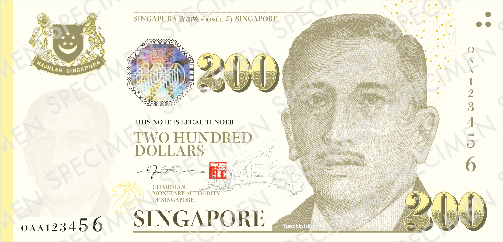
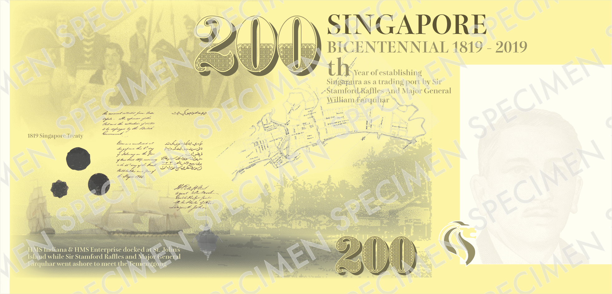

Print & Currency Design
Bicentennial Singapore
Year
2019
Category
Identities
Medium
Print & Currency Design
Location
Singapore, Singapore
A commemorative identity project celebrating Singapore's bicentennial. The work spans poster design and a commemorative banknote concept, weaving together the nation's founding history with its multicultural present.


Drag to rotate · Double-click to flip